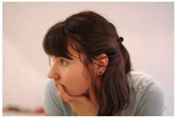

Совет фонда

Президент
Елена Юрьевна Садовникова - кандидат биологических наук, с 1991 по 1998 гг занималась онкоиммунологией в Лондонском университете (UCL) и в Имперском колледже (Imperial College) в Лондоне. 11 лет - прихожанка прихода митрополита Антония в Лондоне. Была членом приходского Совета, членом оргкомитета Епархиальной конференции Сурожской Епархии.
Президент
Елена Юрьевна Садовникова - кандидат биологических наук, с 1991 по 1998 гг занималась онкоиммуно
Члены совета:
Марина Евгеньевна Башлыкова - кандидат филологических наук, сотрудник музея древнерусского искусства им. Андрея Рублева.
Прот. Александр Борисов - кандидат биологических наук, настоятель храма свв. Космы и Дамиана в Шубине.
Борис Сергеевич Братусь - доктор психологических наук, заслуженный профессор Московского университета, член-корреспондент РАО.
Татьяна Михайловна Семчишина - медсестра детской реанимации, работала в Первом Московском хосписе и Фонде помощи хосписам «Вера», координировала работу волонтеров.
Фредерика де Грааф - окончила Университет Гронингена в Голландии, где изучала славянские языки, училась и затем преподавала в международном колледже восточной медицины под Лондоном, более 20 лет – прихожанка прихода митрополита Антония. Имела собственную клинику в Лондоне, переехала в Москву, где работает в качестве рефлексотерапевта и психолога с пациентами Первого Московского хосписа и их родственниками.

Яна Ивановна Родина - типограф, преподаватель института графики и искусства книги имени В. Фаворского.